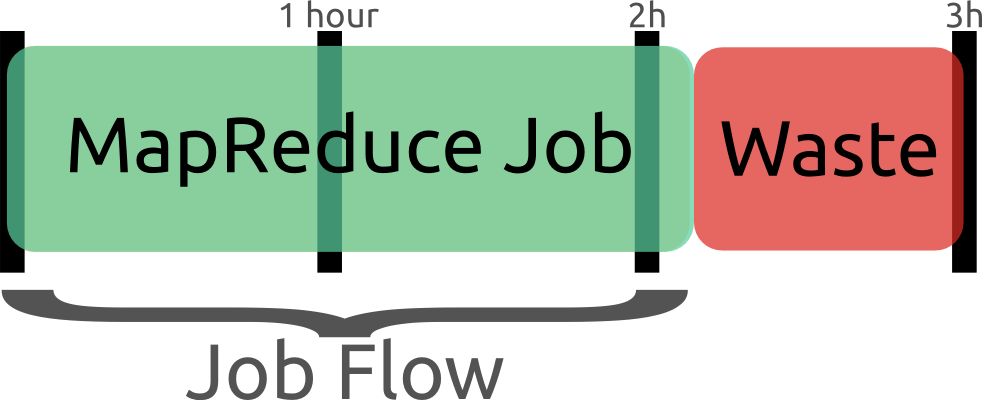
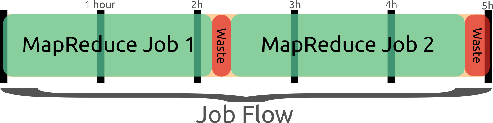

MapReduce
Table of Contents
- 1. Snakes on a Hadoop
- 2. Let's Jump In
- 3. Agenda
- 4. Interest?
- 5. Run a Test
- 6. Yelp has a problem
- 7. Solution?
- 8. Do It Yourself
- 9. Big Idea
- 10. MapReduce
- 11. Point?
- 12. Word Count
- 13. mrjob
- 14. Data
- 15. Pages with > 400 visits
- 16. BREAK
- 17. Solution
- 18. Discussion: User Visits
- 19. Transform Data
- 20. Most Common Title Words
- 21. Joins
- 22. Running Programatically
- 23. MRJob Class
- 24. BREAK
- 25. Solution
- 26. Yelp Data
- 27. Multi-Step
- 28. Unique Review
- 29. INPUT PROTOCOL
- 30. Protocols
- 31. Protocols and InputFormats
- 32. BREAK
- 33. Solution
- 34. Quantifying Intuitions
- 35. Simple: Two Points
- 36. Jaccard Coefficient
- 37. Jaccard of Users
- 38. Write user\similarity.py
- 39. BREAK
- 40. Solution
- 41. EMR
- 42. Elastic MapReduce
- 43. mrjob provides
- 44. Settings
- 45. Bootstrap vs Setup
- 46. Book Keeping
- 47. Tracking
- 48. EMR Pricing
- 49. How To
- 50. mrjob Workflow
- 51. Thank You!
1 Snakes on a Hadoop
- PyCon 2014
- Jim Blomo
- https://jblomo.github.io/pycon-mrjob/slides/MapReduce.html#sec-1
2 Let's Jump In
git clone https://github.com/jblomo/pycon-mrjob.git cd pycon-mrjob virtualenv venv . venv/bin/activate pip install -r requirements.txt
2.1 Versions notes
- All tests were done with Python 2.7
- This is what is used on AWS EMR, so we're going to try to keep versions compatible.
3 Agenda
- What is MapReduce?
- Writing MapReduce in mrjob
- Exercise 1, user activity
- Joins and Programmatic usage
- Exercise 2, self-joins
- Multi-step jobs & Protocols
- Exercise 3, finding Yelp reviews with unique words
- Exploring user-user similarity
- Exercise 4, putting it all together
- Deploying on AWS
3.1 Sections notes
- I will give some background, answer questions
- I'll introduce a script
- The exercise will have audience extending the script to get it working
- We'll go over an example solution
4 Interest?
- What are you interested in?
- What are you hoping to get out of this talk?
- Introduce yourself to neighbor
4.1 Audience participation! notes
- This will help focus this talk
- You'll run into bugs, neighbor can be a good person to ask!
- Name, years using Python, favorite Python function
- I'll be helping out as much as I can, but help each other out first!
5 Run a Test
echo hello | \ python \ venv/lib/python2.7/site-packages/mrjob/examples/mr_word_freq_count.py
6 Yelp has a problem
- 250+ GB of logs per day
- Each GB takes 10 minutes to process
- How long to handle a day's logs?

6.1 Too long notes
- On a single machine 40+ hours!
- If we really had only a single machine, we wouldn't be able to keep up!
- Mistake can't be fixed in a day (billing especially important)
7 Solution? animate
- Don't use one machine!
- What are the new challenges?
- Distributing data
- Calculating overall statistics
- Failures
7.1 New Challenges notes
- With many machines, how to they get access to the 100 GB of logs?
- How do they coordinate who gets which section of logs?
- How do we calculate the average?
- What happens when one of the boxes dies?
- Detecting failure (timeout waiting for data? Out of band?)
- Decide who takes over the data
8 Do It Yourself two_col
- There are many ways to deal with these challenges
- Often, people would "roll" their own solutions depending on the problem
- Google implemented a generic solution, shared idea

8.1 Dependencies notes
- Did you have a super-computer?
- What programming language were you using?
- Type of problem being solved (working on graphs, or web logs, …)
9 Big Idea
- Simplify, limit solution expression
- Enable sophisticated implementation
- Interface: Map() Reduce()
- Implementation: Reliably run over 1000s of machines
9.1 Really Big Idea notes
- Limiting yourself to what can be expressed may seem like a loss
- But it enables the implementation to handle the problems we talked about
- And then can be used as understandable building blocks
10 MapReduce
- Map
- Extract a property to summarize over
- Reduce
- Summarize all items with a particular property
- Simple: Each operation stateless
10.1 Reading notes
- MapReduce's main benefits are for running over many machines, fault tolerance
- But we'll just practice on one machine
- Then see how to run in the cloud
10.2 Example
- URL Shortener
- How many actions have we seen?
- Redirects: 450, Saves: 40, Loads: 60
10.2.1 Details notes
- Redirects
- How many times have we expanded a short link to a long one?
- Saves
- How many times have we saved a new URL?
- Loads
- How many times have we just loaded the front page?
- First
- So first step in MapReduce is what?
10.3 Map
- Input
- Key, Value
- Output
- Keys, Values
10.4 Map Example
- Input Key
- Log line number
- Input Value
- Log line text
- Output Key
- Action
- Output Value
- times this action has occurred on this line
10.4.1 Counts notes
- Log line number is not helpful in our specific case
- Log line text: we hope it is machine readable so we can accurately extract the action
- It has datetime, cookie, action, etc.
- How many times has this action occurred? 1
10.5 Status?
load 1 save 1 redirect 1 redirect 1 load 1 redirect 1 load 1 save 1 redirect 1
10.5.1 Middle Step notes
- From log lines, we've extracted the information out that we care about
- The counts and the actions
- Next step summarize
- Next step after Map?
10.6 Reduce
- Input
- Key, Values
- Output
- Keys, Values
10.6.1 Value*s* notes
- Note: The input is values! Plural
- Because we get a key and all of its associated values
- Remind me: what are we trying to get out of this computation?
- So what do you think the output keys are?
- Values?
10.7 Reduce Example
- Input Key
- Action
- Input Values
- Counts:
[1,1,1,1] - Output Key
- Action
- Output Value
- Total Count
10.7.1 Details notes
- Action is one of load save redirect
- To get total count, sum all of the counts
10.8 Example Output
- Output Key
- Action
- Output Value
- Total Count
"redirect" 4 "save" 2 "load" 3
11 Point?
- A lot of work for counting!
- More complex calculations can be done this way, eg. PageRank
- Stateless constraint means it can be used across thousands of computers
11.1 Details notes
- By only looking at keys and values, can optimize a lot of backend work
- Where to send the results?
- What to do when a computer fails? (Just restart failed part)
11.2 Implementation
load 1 save 1 redirect 1 redirect 1 load 1 redirect 1 load 1 save 1 redirect 1
11.3 Intermediate notes
- This was the situation after map
- Keys all jumbled
- What Hadoop does is sort them and distribute them to computers
11.4 "Shuffle"
load 1 load 1 load 1 redirect 1 redirect 1 redirect 1 redirect 1 save 1 save 1
11.5 Distribute notes
- Now it is easy to distribute, and can handle all the
loadat once - When mrjob is running, you'll notice debugging output, including a "sort" step. This is why.
11.6 Inputs
- MapReduce distributes computing power by distributing input
- Input is distributed by splitting on lines (records)
- You cannot depend on lines being "together" in MapReduce
11.6.1 Splitting Files notes
- Image you have a lot of large log files, GB each
- You'd like to let different machines work on the same file
- Split file down the middle, well, at least on a newline
- Enable two separate machines to work on the parts
- You don't know what line came before this one
- You don't know if you will process the next line
- Only view is this line
- Real life slightly more complicated, but mostly hacks around this
11.7 Incorrect Log Style
- URL Shortener logging
app.logger.info("Handling request for " + cookie) ... # find redirect ... app.logger.info("Redirecting to " + destination)
- Ability to associate the redirect with the
cookie?
- eg. which cookie had the most redirects?
11.7.1 No! notes
- Must log everything on same line
- One machine could have the "Handling request.." Another could have "Redirecting to…"
- Collect it all, then log it
11.8 Correct Log Style
- Logging once
log_data['cookie'] = cookie ... # find redirect log_data['action'] = 'redirect' app.logger.info(json.dumps(log_data))
12 Word Count
- Example: frequency of every word used in a text
- Map: Extract the words from a line, yield the number of times we've seen it
- Reduce: For each word, summarize those counts
12.1 Another example notes
- Let's take a look at another example
- instead of counting actions, 1 per line, now we want to count words
- potentially many per line
- Same general idea though. Tunnel vision on one line (even one word!)
13 mrjob
from mrjob.job import MRJob class MRWordCounter(MRJob): def mapper(self, key, line): for word in line.split(): yield word, 1 def reducer(self, word, occurrences): yield word, sum(occurrences) if __name__ == '__main__': MRWordCounter.run()
More documentation: http://pythonhosted.org/mrjob/
13.1 Relation to example notes
mappertakes keys and valuesreducertakes the keys output by the mapper, and all relevant valuessplittakes a string and splits on spaces, giving wordsyieldessentially returns <key,value> pairs, but can be called more than once
14 Data
- Anonymous web data from www.microsoft.com
- Contains information in CSV format
- use mrjob MapReduce Framework to find answers
14.1 Format notes
- Open up file
- File tells us information about a "Vroot"
- Vroot is just a fancy name for a page with a numeric ID
- each line is different information about the vroot:
- A: attributes of a vroot (id, title, url)
- C: customer information, following which are the Visits that customer made to the vroot
- V: a visit to a vroot (id)
- Before we talked about actions of redirecting, saving, etc. Now we have a lot more different actions: each vroot with an ID
14.2 Output
- vroot ID => number of visits
- Group by the vroot ID
- Summarize all of the visits
14.3 Summary notes
- and what does it look to actually run this?
14.4 Output
python code/top_pages.py msanon/anonymous-msweb.data.gz no configs found; falling back on auto-configuration creating tmp directory /tmp/top_pages.jim.20121116.052647.278066 ... reading from STDIN writing to /tmp/top_pages.jim.20121116.052647.278066/step-0-mapper Counters from step 1: (no counters found) writing to /tmp/top_pages.jim.20121116.052647.278066/step-0-mapper-sorted writing to /tmp/top_pages.jim.20121116.052647.278066/step-0-reducer Counters from step 1: (no counters found) Moving /tmp/top_pages.jim.20121116.052647.278066/step-0-reducer -> /tmp/top_pages.jim.20121116.052647.278066/output/part-00000 Streaming final output from /tmp/top_pages.jim.20121116.052647.278066/output "1000" 912 "1001" 4451 "1002" 749 "1003" 2968 "1004" 8463 "1007" 865 ...
14.5 Running notes
- Run with python
- Output some debugging information while it is calculating
- Finally, output results
15 Pages with > 400 visits
- Find pages (aka Vroots) with more than 400 visits
- Start off with a template
15.1 Demo notes
csv_readlinetakes in a CSV line, return a list of values
16 BREAK
- Please complete exercise 1
- Fill in
code/top_pages.py - Take in web browsing data, output vroot to number of visits
17 Solution
git commit -m "my solution" -agit checkout ex1- yield the vroot ID and the number of times seen in that line (1)
- sum the times seen, check threshold, yield pair
18 Discussion: User Visits animate
- Can we calculate the number of visits per user?
- No! User information on different line
- Cannot assume linear processing
19 Transform Data
- MapReduce needs all information on one line
- This data format has user information on different line than visit
- Write single threaded program (not mrjob) to transform it
19.1 Not covered notes
- This is a little out of the scope of this tutorial
- Just know that not all types of data are amenable to MapReduce, and
Hadoop/mrjob specifically
20 Most Common Title Words
- Vroots (pages) have titles
- What are the titles of the 10 most browsed nodes?
21 Joins
- Sometimes need to join against two data sets
- In our case, it is the same file, different record types
- mrjob can pass serializable objects between Map and Reduce steps
- You can "tag" values with identifiers, eg. title or visit
A,1012,1,"Outlook Development","/outlookdev" ... V,1012,1
22 Running Programatically
- We've been running in the command line
- How to process the output of an MRJob inline
- Testing, insert results into a database, do further processing on all of result
23 MRJob Class
mr_job = MRJobSubclass(args=[...]) with mr_job.make_runner() as runner: runner.run() runner.stream_output()
23.1 Example notes
code/top\_titles.py
24 BREAK
- Please complete exercise 2
- What are the titles of the 10 most browsed nodes?
- Fill in
code/count_titles.py - Examine and run with
code/top_titles.py
25 Solution
git checkout ex2- yield a tuple tagged with either 'A' or 'V'
- When iterating through values, extract the data from the tagged tuple
25.1 Other possibilities notes
- Can tag with a dictionary instead
26 Yelp Data
- Subset of data available in
yelp/selected_reviews.json.gz
{"votes": {"funny": 3, "useful": 3, "cool": 2},
"user_id": "dYtkphUrU7S2_bjif6k2uA",
"review_id": "gjtWdiEMMfoOTCfdd3hPmA",
"stars": 4,
"date": "2009-04-24",
"text": "Man, if these guys were trying to replicate a gringo bar in Mexico...",
"type": "review",
"business_id": "RqbSeoeqXTwts5pfhw7nJg"}
26.1 More Data notes
- You may run with more data by downloading and extracting from http://www.yelp.com/dataset_challenge
27 Multi-Step
- Not all computations can be done in a single MapReduce step
- Map Input: <key, value>
- Reducer Output: <key, value>
- Compose MapReduce steps!
27.1 Output as Input notes
- The output of one MapReduce job can be used as the input to another
27.2 Examples
- PageRank: Multiple steps till solution converges
- Multi-level summaries
27.3 PageRank notes
- PageRank is an algorithm for calculating the important of a page
- But it depends on the importance of every page pointing to it!
- So iteratively calculate the important of all pages
- Find average presidential donations by candidate, then normalize averages
28 Unique Review animate
- Count unique words per review
- Map Input: <line number, review dictionary>
- Map Output: <word, review-id>
- Reducer Input: <word, [review-ids]>
- Reducer Output: <review-id, 1> if the word is unique
28.1 Questions notes
- For our purposes, what is always the mapper input?
- What feature do we want to calculate first?
- Given this mapper output, what must the reducer input be?
- What property about a review are we interested in?
28.2 Step 2: Count Unique Words animate
- Map Input: <review-id, 1>
- Map Output: <review-id, 1>
- Reducer Input: <review-id, [1,1,…]>
- Reducer Output: <review-id, sum>
28.3 Questions notes
- Given the reducer output, what must the mapper input be (for chained MapReduce steps)
- What do we want to group by?
- Given this mapper output, what must the reducer input be?
- What are we calculating?
29 INPUT PROTOCOL
- Previous examples manually parsed line
- mrjob provides "protocols" to automatically parse and recover from error
- Specify the class desired to parse the lines
29.1 Examples notes
- Open up code/uniquereview.py
- We're using a JSON object per line. Other options include JSON key-values,
or writing your own
- Instead of raw text,
recordwill now be a Python dict
30 Protocols
class JSONValueProtocol(object): """Encode ``value`` as a JSON and discard ``key`` (``key`` is read in as ``None``). """ def read(self, line): return (None, json.loads(line)) def write(self, key, value): return json.dumps(value)
30.1 Writing your own notes
- Protocols are straightforward to write
- At their heart contain
readandwritemethod - For example, we've implemented a Protocol for MySQL INSERT statements, so
can easily process data created by mysqldump
31 Protocols and InputFormats
- mrjob operates on lines of tab delimited text
InputFormattranslates data stored on HDFS to TextProtocolstranslates a line into a Python variable
31.1 Limitations notes
- line oriented is limitation of Hadoop Streaming
- It sends data through stdin/stdout. Sometimes people ask if they can process an XML file with arbitrary line breaks
- Not what mrjob is good at. Hadoop may break at any point without extra
configuration
- Some of you may be familiar with Hadoop's
InputFormatorOutputFormat.
They serve a slightly different purpose than Protocols
InputFormatscan be used to extract data which is not text on disk, for
example SequenceFiles, or from data which is not simply stored in a directory, like providing a Manifest file.
32 BREAK
- Please complete exercise 3
- Fill in
code/unique_review.py - Output a review ID with how many unique words it used
- Run with data in
yelp/selected_reviews.json
33 Solution
- Extract words from the review comment field
- Group them by word, keep those that are unique
- Group them by review, return sum
34 Quantifying Intuitions
- Data Scientists translate ideas into math
- Often want to suggest "similar" items or users
- But what does "similar" mean?
34.1 Skills notes
- One of the core skill of a DS is translating an intuition into a
quantifiable entity
- An example is for recommendation systems. If you want to find people to
follow, or friends to recommend, you often want to find "similar" people to yourself
- But what does similar mean? (Ask)
- In order to recommend one product over another, or sort in any useful way,
you need to associate a number with that similarity
35 Simple: Two Points animate
- Sometimes can translate entities to points
- What is a similarity metric between these two?
- Euclidean distance
- sqrt((x1-x2)**2 + (y1-y2)**2)
35.1 Start notes
- For example intracity geographic distance
- Or house price and square feet
- Called "vector space" because a point also describes a vector, which you
can get interesting information about (magnitude, angles, etc)
- Simple starting point: Euclidean distance
- Has many downsides, but is an example of translating a concept of
similarity to a number
- Interestingly the notions of distance and similarity are two sides of the
same coin.
- Also called the L2 norm because we're taking the second root. We could
cube and take the cube root… leads to different semantics
- How to measure if points don't map so easily to this "vector space"?
36 Jaccard Coefficient
- Commonly used for calculating set similarity
|intersection| / |union|- "Jim likes pizza" | "Shreyas likes pizza"
36.1 Jaccard notes
- Break up into a set
- calculate # in intersection
- calculate # in union
- divide
37 Jaccard of Users
- We take the set of businesses reviewed by two users
- Value if users have no businesses in common?
- All businesses?
37.1 Answers notes
- None = 0
- All = 1
38 Write user\similarity.py
- Find users >= 0.5 similarity
- User Similarity: Jaccard similarity of businesses reviewed
- {BizA, BizB, BizC} ~ {BizF, BizB, BizG}
38.1 Input notes
- Takes as input the list of reviews that we have
- You'll be more on your own for this one, very limited skeleton
39 BREAK
- Please complete exercise 4
- Fill in
code/user\_similarity.py - Run with data in
yelp/selected_reviews.json - Hint: Users with > 0 similarity will share at least 1 business
40 Solution
- Map user to list of businesses reviewed
- Map business to list of user descriptions
- Find users with similarity
- De-duplicate
40.1 Efficiency notes
- We do duplicate work, but the trade-off is parallelism in the best case
(not many users are overlapping with each other for dozens of reviews)
41 EMR
- We've been using local mode
- Effective for debugging, small amounts of data
- What about actually processing Big Data?
42 Elastic MapReduce
- Hadoop as a service by Amazon
- Installs and sets up Hadoop cluster
- JobFlow: instance of this cluster
- Jobs: one command with series of MapReduce steps
42.1 Nomenclature notes
- API to bring up a cluster of N machines
- Amazon provides tech for registering them all together, running Bootstrap
commands, terminating them, etc
- This cluster is called a JobFlow
- We'll discuss what it means to have one JobFlow with multiple Jobs in a bit
43 mrjob provides
- Encode standard settings as config file or arguments
- Uploads and runs bootstrap commands w/ local integration
- Transparent inter-job bookkeeping
- Tracking, error collection, job sharing
43.1 Benefits notes
- A config file is easy to install across developers. Yelp has 3 main ones:
standard, memory-intensive, and cpu-intensive.
- Otherwise all of your developers must learn the different options for the
AWS API
- Often you'll need to make files available to EMR via S3, for example custom
packages you'd like to install. EMR cannot reach back out to your localhost. mrjob will automate the uploading and management of these files.
- mrjob "tags" JobFlows with information about the user running them, and has
tools for aggregating those metrics.
- It uses the tags to find compatible JobFlows, in the case where it will
share an existing one.
44 Settings
- Instance types
- AWS keys
- Location for logs
- SSH key
- Bootstrap behavior
- Setup commands per job
44.1 Info notes
- Instance types
- how beefy a machine do you want to run? Is your load
memory or CPU bound? Yelp uses a few standard options, starting with m1.large
- EMR keys
- These are used to communicate with AWS to start your instance
- Location for logs
- Where in S3 do the results of the run go? EMR logs results of
bootstrap actions, Hadoop logs results of running the query.
- SSH key
- Once the instance is started, mrjob can connect to it via SSH and
stream logs, and setup a tunnel for HTTP traffic to use the Hadoop interface
- Bootstrap behavior
- Often you'll need to install libraries, or upload your
own repository. Since your code is running on the entire cluster at once, this install needs to happen on all machines
45 Bootstrap vs Setup
- Bootstrap runs at VM creation
- Setup runs at the start of each job
- Bootstrap for run-once non-code config
45.1 Setup vs Bootstrap notes
- When repeatedly changing and testing your code, you'll want a new version
deployed to the machine each time. That is what setup commands are for: parts of your application that change
46 Book Keeping
- –output-dir s3://output-bucket/path/
- –no-output
- intermediate results stored on HDFS
47 Tracking two_col
- mrjob opens an SSH tunnel to the master node for Hadoop stats
- On job failure, will download logs and use heuristics to find likely error
48 EMR Pricing
- Job flows are billed hourly, rounding up

48.1 Typical usage notes
- Spin up a job flow, when finished, kill it
- Remaining time and end of last hour is wasted
- Billed for it, but not used
48.2 Job Flow Pooling
- Don't end job flow after job, share remaining time

- New jobs can wait N minutes for an idle flow
48.2.1 Pooling notes
- Billed on the hour, so don't give up early!
- Only shut down idle job flows at the end of the hour
- If another job comes up, reuse idle flow
- Also makes job faster to spin up BONUS for developers
49 How To
python code/unique_review.py -r emr -c mrjob.conf s3://i290-jblomo/data/selected_reviews.json.gz
- Simply specify
-r emr
50 mrjob Workflow
- Develop locally on subset of data
- Run on EMR on all data located in S3 bucket
- Either save output in S3, or stream locally
51 Thank You!
- Jim Blomo, Engineering Manager Yelp
- @jimblomo